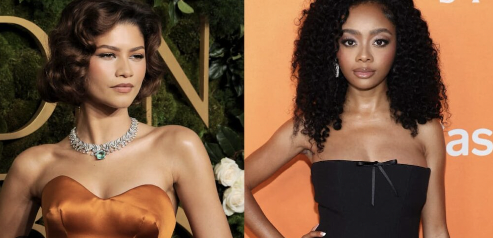

I remember when growing up, I wanted to be on TV like all of my favorite stars from Disney Channel and Nickelodeon. I saw being on this network as my launching point and confidently believed that I would grow up to be a world-renowned movie star like Taraji P. Henson or Regina Hall. I no longer want to be a famous Hollywood actor, but I still occasionally find myself looking into the child stars I used to love watching, and am surprised to see that, despite their efforts, many have failed to break into the industry and establish themselves as serious actors. I’ve seen the term “Disney Kid Curse” be used to address this phenomenon; those who’ve been prominent features on the channel struggle to secure mature roles because the public still sees them as the little kids they were introduced as. I want to see if AI can break down this phenomenon further and explore potential strategic choices that would maximize former Disney kids’ chance at achieving longevity as actors in the industry.
When I first asked AI about it understanding of the “Disney Kid Curse”, it focused on the long-term personal issues that some child stars, like Lindsey Lohan, Demi Lovato, and Miley Cyrus, have experienced after becoming adults.
Once I clarified, AI revealed that child stars struggle to land more mature roles due to the following:
- Audience rejection - fans struggle to accept them outside their Disney persona
- Industry skepticism - casting directors won’t consider them for serious dramatic roles
- Box office struggles - their post-Disney films often underperform
The audience rejection facet was not surprising to me. In my personal experience on social media, I have often come across child stars’ profiles. When they try posting amateur content, comments often refer to them by the name of their character or post popular memes from when they were younger.
I wanted to dive deeper into which of these factors holds the most weight in their downward career trajectories, so I asked AI, “how do hollywood casting execs deal with a disney kid: do these actors struggle because they attempt to breakout and are rejcted, or do casting agents not even give them the chance?
It’s both, but primarily the latter - casting directors often don’t even give them a chance. The problem happens at the audition/consideration stage:
- They’re not called in - For serious dramatic roles, casting directors filter Disney Kids out before they can prove themselves.
- Preemptive typecasting - Execs assume audiences won’t buy them in mature roles, so they don’t waste time auditioning them. It’s a business calculation about box office viability.
- Age demographic mismatch - Their fanbase skews young, but adult prestige films need audiences who… don’t associate them with tween sitcoms.
When they do get auditions, it’s considered an uphill battle to not only land the role, but to prove to audiences that they have range.
I then prompted AI with a hypothetical: “Pretend I’m Skai Jackson, who starred in the series, ‘Jessie’, and it is 2015 and the show has just ended. Make me a career plan to establish myself as a mature actress who could ideally reach Zendaya-level stardom.”
PHASE 1: 2015-2017 - Strategic Distance & Credibility Building Immediate (2015-2016):
Take a break. No new Disney projects. Let the “Jessie” association cool. Hire new representation - Get an agent known for career transformations (CAA/UTA), not Disney-pipeline agents Social media rebrand - Shift from bubbly kid content to thoughtful, socially conscious voice. Show maturity and substance. Target: One prestige indie film - Take a supporting role in a Sundance-type drama. Low pay, high credibility. Think something like The Hate U Give (if you can get in early) or similar coming-of-age with social weight.
2017:
Guest arc on prestige TV - Land a 3-4 episode arc on a critically acclaimed HBO/FX/Netflix drama. Not a lead, but a role that shows range. Think Euphoria-type content before Euphoria existed.
PHASE 2: 2018-2020 - Prove Your Range 2018-2019:
Lead in festival indie film - Take the lead in a gritty independent film that premieres at Sundance/Toronto. Something that shows dramatic chops - abuse survivor, activist, complex teen navigating trauma. Awards campaign hustle - Do the festival circuit, press, interviews showing your intelligence and depth Voice work in animated prestige - Something like Spider-Verse - keeps you working, different audience
2020:
Supporting role in studio film - Not the lead yet, but a memorable supporting role in a film with A-list actors. Learn from them, get associated with quality.
PHASE 3: 2021-2023 - The Breakout 2021:
Lead in streaming prestige limited series - This is your Euphoria moment. Netflix/HBO limited series (6-8 episodes) where you play a complex, flawed character. Drug addiction, sexuality, moral ambiguity - show you can handle adult themes.
2022-2023:
Studio lead with respected director - You’ve proven yourself. Now take the lead in a mid-budget ($30-50M) studio film with a respected director. Jordan Peele-type, Barry Jenkins, Greta Gerwig - someone whose name carries weight. Awards consideration - This role should get you nominated (Golden Globe, SAG, maybe Oscar)
PHASE 4: 2024-2025 - Zendaya Territory 2024:
Franchise/tentpole - Now you can do blockbuster without being labeled “just Disney.” Marvel, DC, or prestige sci-fi like Dune. Fashion deals & brand partnerships - Now that you’re credible, luxury brands will come calling
2025:
Producer credit - Start producing projects that interest you. Creative control = longevity
I wonder if this plan would prove successful if the next generation of Disney Kids were to follow it!